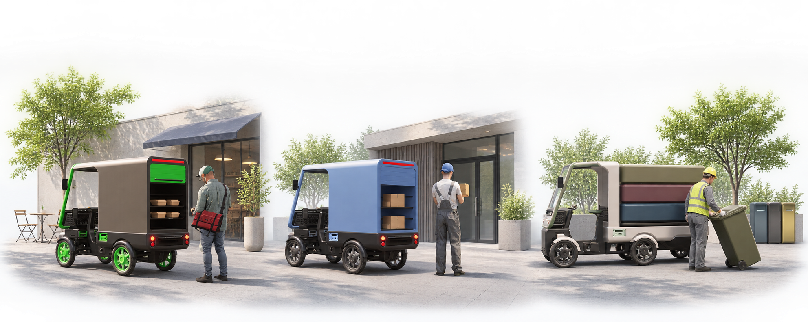
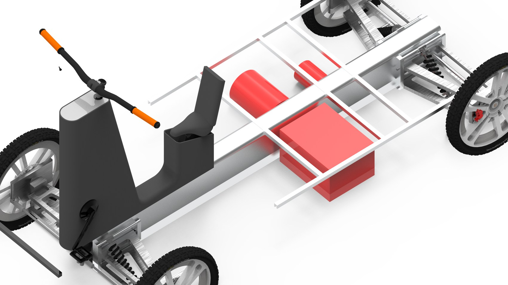
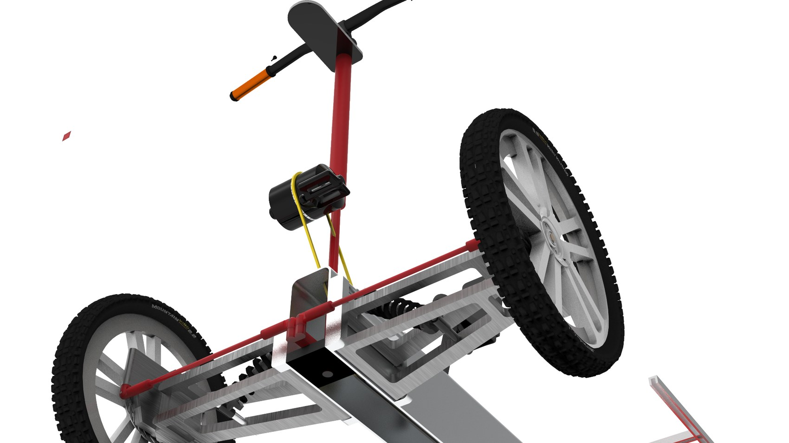
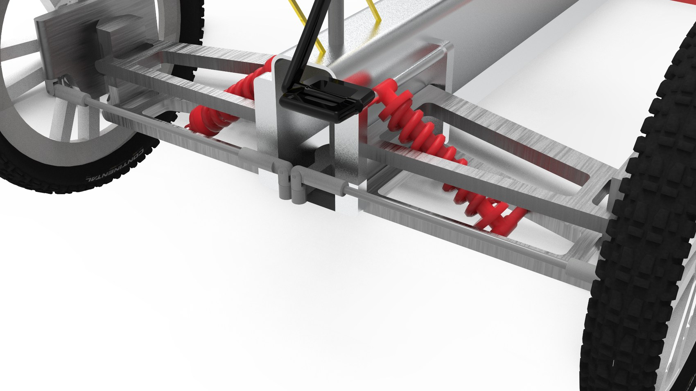
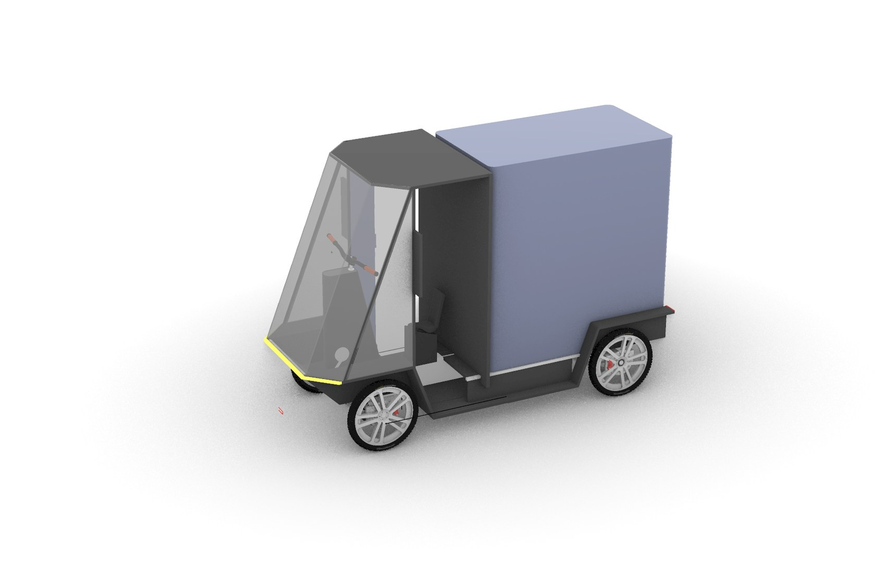
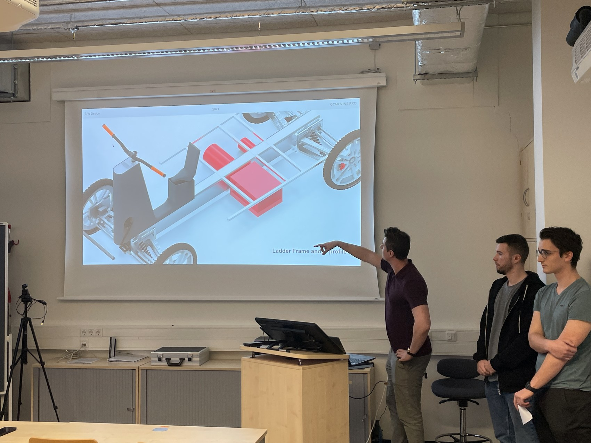
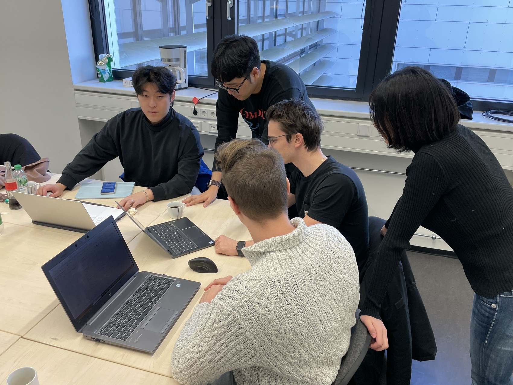
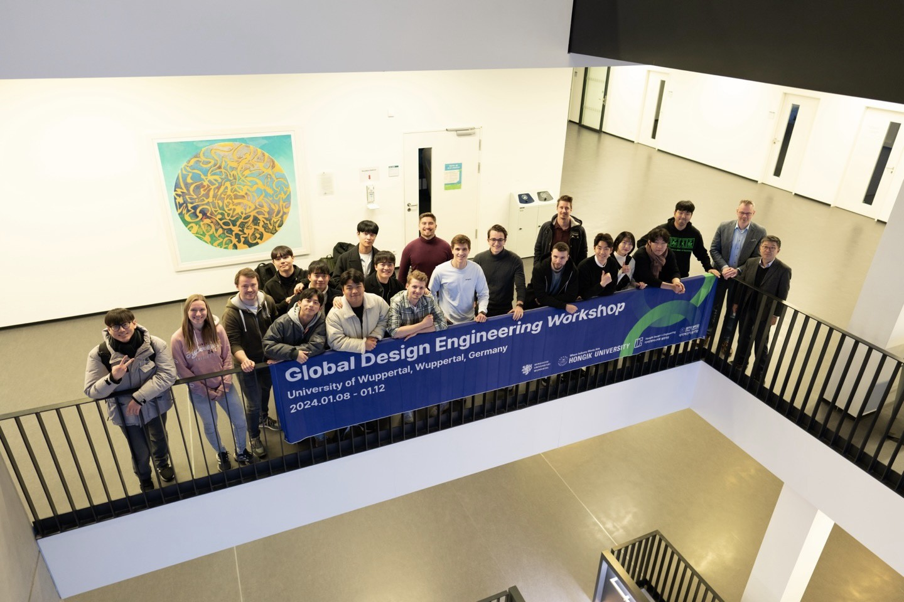

Food delivery
Carry orders between local businesses and customers.


GLOBAL COLLABORATION · DESIGN ENGINEERING
A global project applying VDI 2221-based systematic engineering design to an electric cargo cycle for urban deliveries and services.
2023–2024 · Hongik University & University of Wuppertal

THE PROJECT & DESIGN APPROACH
We developed an electric cargo cycle for urban deliveries and services through a systematic design process based on VDI 2221 and Pahl/Beitz.
PRODUCT VISION & DESIGN
A compact electric cargo cycle designed for food delivery, parcel delivery and recycling collection in the urban center.

Carry orders between local businesses and customers.
Bring parcels through the city and to the doorstep.
Collect and move separated materials on local service routes.
FROM APPLICATION TO DESIGN
We translated the needs of urban delivery and service work into an integrated mechanical design, aligning the chassis, steering, suspension and component layout with driver access and cargo handling.




GLOBAL COLLABORATION
Working as an international team, we combined engineering and design perspectives to develop and present a shared mobility concept.



DESIGN ENGINEERING · GLOBAL PROJECT EXPERIENCE